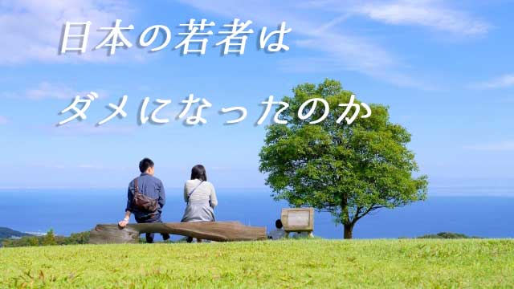

最近の若者は優しくなった！ 特に男子。
この傾向はますます加速しているように感じる。
仕事柄学校を訪れることも多いが、中学校でも高校でも生徒たちは礼儀正しく、言葉を交わすと皆愛想良く優しい性格が伝わってくる。
つまり「良い子」が多いのだ。
そのことに最初気づいたのは今から15～16年前、塾講師をしている頃だった。急に生徒が素直になり、優しくなったと感じた。廊下などでも向こうからあいさつしてくるようになった。それまでは、思春期特有の大人に対して警戒心を持ち本心を明かすまいと構える子が普通だったから、けっこう驚いたのを覚えている。
それまでは生徒に「心を開いてもらう」ことはそれだけで大変な作業だったからだ。
そしてこの頃から世間でも「最近の子は反抗心が見られない」と言われ始めた。
つまり30代前半から下の若者は「優しい」「素直」「反抗的ではない」「争いごとを好まない」などの言葉で特徴づけられるということ。特に男性にその傾向が強いと感じられる。
若い男性と接していると、中高生でも社会人でも皆大事に育てられた「お坊ちゃま気質」（笑）のようなものを感じる。少なくとも我々世代のようにガツガツしたところや、何でもかんでも反抗する破壊的性格は感じられず概して「育ちの良さ」のようなものを感じる。
といって「ヤル気に欠ける」とか無気力であるわけではない。言われたことはちゃんとこなすし前向きの姿勢で物事に臨む人も少なくない。
ただ、自分がこうと思ったことを何があっても貫き通そうとか「目に見えない理想」へ向かって突き進むという気概のようなタフネスはあまり感じられない。意見や感想はきちんと言えるが他人とぶつかってまで自己主張はしない。
そもそも他人の領分を侵そうとしない。互いを傷つけない配慮―優しさ―が利いている。
感情ムキ出しのぶつかり合いは巧みに避ける傾向にある。
むしろ女性の方がアクティブでありアグレッシブだ。仕事でも何でも「やるべきこと」に対して妥協なく取り組む女性が多い。
面白いのは、男性だと仕事などで叱ったり注意するとヘコむのに女性は「何クソ！」（笑）と闘志をむき出しにする人が多いことだ。
30年前とは逆の現象が起きている。
男のエネルギーは女より弱い
この現象を見て「日本の男は弱くなり女が強くなった」と紋切り型で判断するのか、あるいは男性優位社会が崩れ出したことで相対的に「女が強くなったように見える」のか見解は色々分かれるところかも知れない。
確かに男性たちの優しさが「弱さ」につながっている部分はあり、挑戦や冒険より現状の安定ばかり求めてかえって危機を招く事態もよく見る。年輩者の一人として歯がゆい思いも感じている。
しかし、「だから今どきの若者は…」とか「男が昔に比べダラシなくなった」とまでは思っていない。
こういう議論は元々「男とはこうあるべき」「女とはこうあるべき」という前提のもとでの話だからだ。つまり「男とは強くあるべき」「男なんだから勇気を出せ」「男のくせに泣くなんて…」
とひと昔前の「男らしさ」を持ち出すことで今どきの男性を批判することになりがちで、そんな議論は現実的に意味はない。
そのような考えは男性優位の社会を支える古い価値観に過ぎないからだ。
むしろ男性が弱くなったかに見える現代のほうが自然な姿に近い。どういうことか。
まずよく知られているように生物としての男性の生命力（エネルギー）は女性より弱い。男は命にかかわるような状況にでも追い込まれない限り、エネルギーを全開にすることは少ない。困難な状況、めんどうな事態からすぐ逃げようとする。耐性が低いのだ。元々こういう特性があるのに、今のように少子化で大事に育てられると「お坊ちゃま化」するのは当然と言える。
それに対して女性は子どもを産み育てる者として、基本的な生命力―生き残ろうとする意欲―ははるかに強い。子を産み育てることはすさまじいエネルギーを要する。女性はこの高いエネルギーを元々標準装備（スペック）していて、基本が「ナマケ者」である男はエネルギーレベルでは太刀打ちできないのだ。
さて、こういう生物としての男女差に加えもう一つ歴史的文化的背景も影響していると思う。
日本文化や日本人気質をザッくりキーワードで示すなら「優しさ」「勤勉」「繊細」「高い共感性」「謙虚」「奥ゆかしさ」などであろう。
これらの特徴を一言で表すなら「女性的」と言える。あるいは「平和的」である。
白黒をはっきりつけず、闘うより合議制で物事を決めていくやり方。空気を読んで全体が納得するよう落としどころを探るあり方。
これらは、激しく自己主張し闘って勝ち取るという欧米や中東のあり方とは著しく異なって平和的であり、女性的と言える。
女性原理が世界を救う
日本が江戸時代までは「女性原理優位」の社会であったことは、歴史や民俗学などの様々な資料がすでに明らかにしている。
心理学者の河合隼雄も確か「日本は典型的な女性原理に基づく社会だ」と言っていた。
男性原理が全面に出る、すなわち「男らしさ」が強調される時代は戦国時代、幕末から近代などの―時期動乱闘争の時代―に限られる。日本の歴史を千年単位で見渡せば、男性優位とされる時代はわずか100年少しなのだ。
ただ、明治維新から始まる欧米型近代国家が続いたせいで、日本は昔から「男がイバってる国だ」と誤解しているに過ぎない。
そうではなく女性的だからこそ、男性らしさを強調せざるを得なかったと言うほうが正しい。明治以来戦前まで続いた「男性らしさ」の強調と過度の「女性蔑視」は政策であり、故に不自然を強いてきたといえる。
つまり無理をしてきたのだ。
まとめるとこう言える。
男は元々生命エネルギーは弱い。しかし命に危険が伴う戦時（闘争）などには瞬発的に力を発揮する。
男性原理が賞賛されるときは、社会が動乱状態のときで、平和な時は女性原理が支配する。それが日本の特徴。
そして今は平和（平時）が長く続いているため本来の自然な状態に戻った。つまり男性が大人しく優しく（弱く）なり女性が元気に活動する。
これが先に「自然に近い」と言った意味なのだ。
最近の若者が反抗しなくなり素直で優しくなっている背景として、19世紀型近代国家を支えた「男性優位の価値観」が崩れ始めたという事実があるということ。そして平和が続いたために本来の日本的性格が若者を中心に現われ出ているということ。
この2つを考えあわせれば決して「日本の未来」を嘆いたりする必要はなく、それどころか日本人の持つ美徳を発揮するチャンスが来ていると肯定的にとらえたい。
和を尊び、解決を武力に求めず共感と平和の精神で事に当たる。このノウハウを生かすことができるのは日本の若い世代だと思うからだ。
今でも男性原理に基づく多くの国民族では、紛争や戦争テロが跡を絶たない。本当は女性原理優位の日本がそこにクサビを打ち込むことができる。
とマァ私は期待している。
古い世代の中には（私の周りにもたくさんいる）「近ごろの若い連中は軟弱だ」とか「このままでは日本の将来はどうなる」と悲憤慷慨する者がいるが私は心配していない。
平和が続きすっかり女性化した江戸時代も、幕末の危機になると多くの若者たちが立ち上がり近代国家をつくった。第二次大戦に敗北し崩壊とガレキの中から、若者たちは会社を興し国を再建し経済を立て直した。ソニーやホンダもここから生まれた。
社会が存亡の危機にあるとき常に若者が立ち上がり改革し発展させて来た。いつも若者たちが先頭に立ってきたことを忘れてはならない。
今の若者たちにもそのDNAは受け継がれていると信じたい。